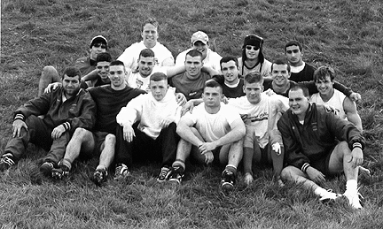

U Buffalo
Playoffs
Venue Aarvark Park Date 11/01/98
Referee Lou Hamer Jr Time 10:00 AM
| A | ||
| 15 - 8 | ||
| 1 | Meade | |
| 2 | Agnello | |
| 3 | Tillou / Race | |
| 4 | Mochrie | |
| 5 | Pribish | |
| 6 | Flagg | |
| 7 | Urbaniak | |
| 8 | Tubridy | |
| 9 | Falgiano (5) | |
| 10 | Moscato (23) | |
| 12 | Clancy | |
| 13 | Kinch | |
| 11 | Molner (5) | |
| 14 | Ghneim / Quintieri | |
| 15 | Snyder |

Return